many years ago Quietype over on WithTheWill came up with the original card templates, and also eyeballed the fonts in use on the official cards. he probably didn't expect that lots of people would stick to his initial thoughts years later.
this is a guide on reverse-engineering the fonts in question.2
if you want to suggest a new font, specifically cite at least 1 glyph that is a better match to the card text. if that causes some other glyphs to be wrong, that's okay, we won't have to use the new one but knowing what pieces we need is valuable WarGreymon Imperial Dramon: Ace & f,f
if a font on this page isn't loading, it will default to Times New Roman like this
some of this is out-of-date! Digi-Lov has done great research on this. the things we disagreed on, for most of them they were right
|
|
|
Level |
current confidence: high, all glyphs match |
| this looks a lot like Prohibition. specifically, note that the "2" and "7" have serifs on them, and that the two top prongs on the "4" are equal height. | |
|
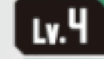 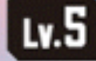 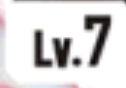 | 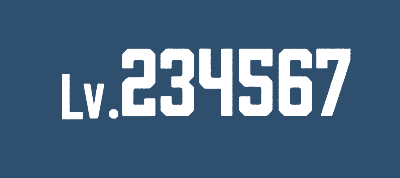 |
|
|
|
Name |
current confidence: high; all glyphs match |
| for this font, the distinctive features are the curve on the lower-case L and the hook on the lowercase g: | 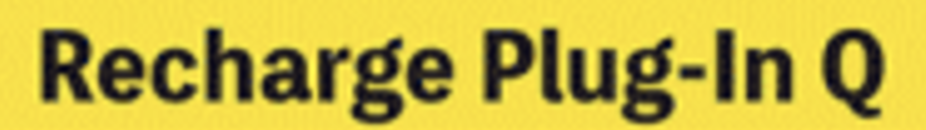 |
| Schibsted Grotesk hits on several glyphs including the lower-case L, A, and G. The capital I is particularly ugly, though: | 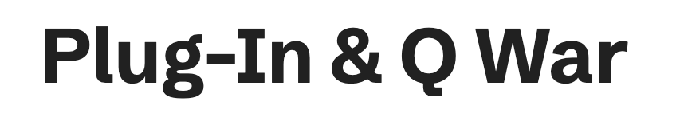 |
|
j.griin found Falling Sky which has a nice capital I and capital Q while still being close on the general shape of the "g". however, the but the serif on the top of the "g" is going the wrong direction and the serif on the bottom right of the "a" is also incorrect. | 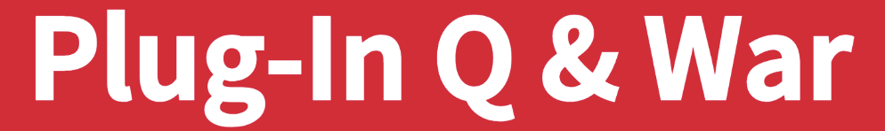 |
| we might want the capitals from one font and the lowercase from another
however, the most distinctive glyph is the ampersand
| |
|
|
|
Cost |
current confidence: medium to high |
|
Ayar Kasone looked right for play cost and evo cost. 01234567890 However, HelveticaNeue is better, and also used in DP. For the "level" field of the circle, Roboto seems decent match, tough to say For the evo cost, . Look at "0" again. the actual "0" looks more rounded. like helvetica. it's weird for them to be so close yet different so i really want to say they're both Ayar Kasone. | |
| Card id is helvetica neue ST17-065 | helvetica is decent back up if you don't have the font ST17-065 |
|
|
|
Effect Text |
current confidence: high outside keyword, medium inside keyword |
|
There are two different fonts in use on effect text. One is the raw text, the other is that inside of effects.
The effect text outside has straight lower-case L and the lower-case G has a hook. Inside of a colored-block, the l is curved and the g is hooked. the "t" has a sloped top, but the "h" does not even though it looks like it does in this picture. i think AI "improved" this picture as I took it but check the physical card, there's no slope on "h" | 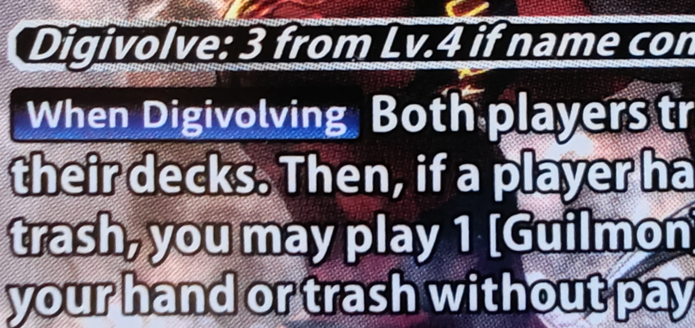 |
| Roboto Condensed is a decent match here. The comma is too curved and the "t" is missing the sloped top. | 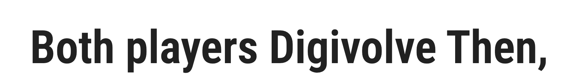 |
| Asimov Print C seems a bit better. The "t" is missing the slope on top. | 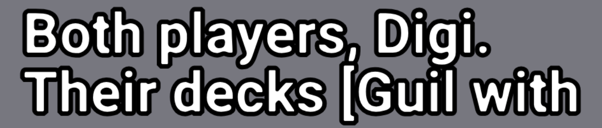 |
Using Myriad Pro is the winner. i can match a complete row of text down to the pixel. this is definitely right. | 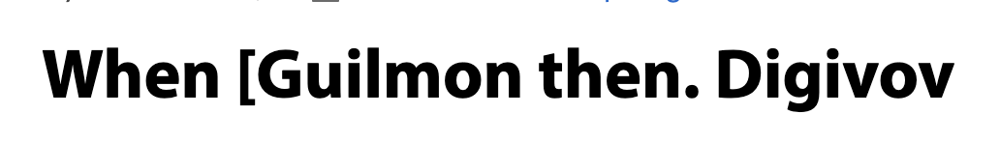 |
| Since people won't believe me, here's Roboto Condensed loop: | 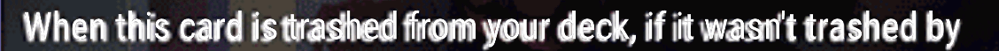 |
| And here's Myriad loop: | 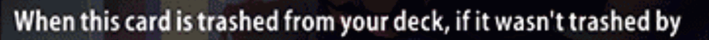 |
... | |
| For the text inside the effect box, Falling Sky seems a good match. The "I" and "g" mean it I can't detect any glyph that's different, but it doesn't *quite* feel light in some way. like i need to squish it vertically. | 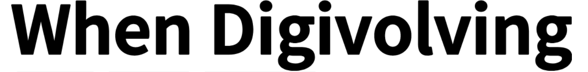 |
|
|
|
Traits |
current confidence: medium-high |
|
The trait text is harder to see. The capital-U is a perfect curve, the lower-case U has a prong hanging off
the lower-right and the lower-case G has a prong on the upper-right. The vertical strokes on the capital-M are
not straight up-and-down.
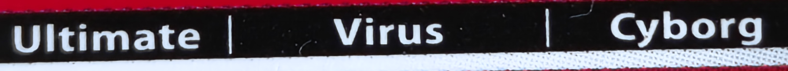 Repo Medium sort of matches, except that the lower-case U and lower-case G are missing prongs. Myriad, again, may be the right answer, but it needs to be "squashed" like the keyword text, but note that they're definitely not the same font there, as the "g" has a hook here. | |